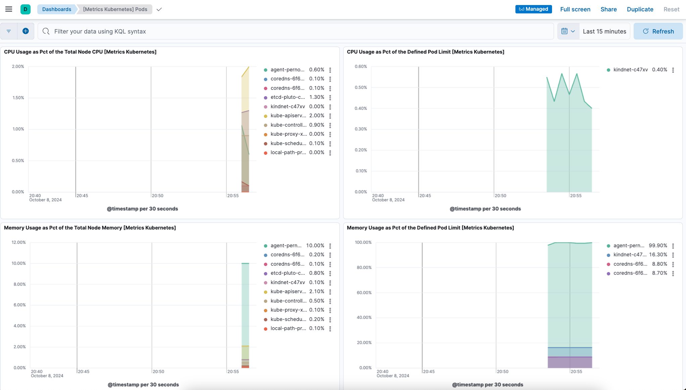

Example: Install Fleet-managed Elastic Agent on Kubernetes using Helm
editExample: Install Fleet-managed Elastic Agent on Kubernetes using Helm
editThis functionality is in technical preview and may be changed or removed in a future release. Elastic will work to fix any issues, but features in technical preview are not subject to the support SLA of official GA features.
This example demonstrates how to install Fleet-managed Elastic Agent on a Kubernetes system using a Helm chart, gather Kubernetes metrics and send them to an Elasticsearch cluster in Elastic Cloud, and then view visualizations of those metrics in Kibana.
For an overview of the Elastic Agent Helm chart and its benefits, refer to Install Elastic Agent on Kubernetes using Helm.
This guide takes you through these steps:
Prerequisites
editTo get started, you need:
- A local install of the Helm Kubernetes package manager.
- An Elastic Cloud hosted Elasticsearch cluster on version 8.16 or higher.
- An active Kubernetes cluster.
-
A local clone of the elastic/elastic-agent GitHub repository. Make sure to use the
8.16branch to ensure that Elastic Agent has full compatibility with the Helm chart.
Install Elastic Agent
edit- Open your Elastic Cloud deployment, and from the navigation menu select Fleet.
- From the Agents tab, select Add agent.
- In the Add agent UI, specify a policy name and select Create policy. Leave the Collect system logs and metrics option selected.
- Scroll down in the Add agent flyout to the Install Elastic Agent on your host section.
-
Select the Linux TAR tab and copy the values for
urlandenrollment-token. You’ll use these when you run thehelm installcommand. -
Open a terminal shell and change into a directory in your local clone of the
elastic-agentrepo. -
Copy this command.
helm install demo ./deploy/helm/elastic-agent \ --set agent.fleet.enabled=true \ --set agent.fleet.url=<Fleet-URL> \ --set agent.fleet.token=<Fleet-token> \ --set agent.fleet.preset=perNode
Note that the command has these properties:
-
helm installruns the Helm CLI install tool. -
demogives a name to the installed chart. You can choose any name. -
./deploy/helm/elastic-agentis a local path to the Helm chart to install (in time it’s planned to have a public URL for the chart). -
--set agent.fleet.enabled=trueenables Fleet-managed Elastic Agent. The CLI parameter overrides the defaultfalsevalue foragent.fleet.enabledin the Elastic Agent values.yaml file. -
--set agent.fleet.url=<Fleet-URL>sets the address where Elastic Agent will connect to Fleet in your Elastic Cloud deployment, over port 443 (again, overriding the value set by default in the Elastic Agent values.yaml file). -
--set agent.fleet.token=<Fleet-token>sets the enrollment token that Elastic Agent uses to authenticate with Fleet. -
--set agent.fleet.preset=perNodeenables Kubernetes metrics onper nodebasis. You can alternatively set cluster wide metrics (clusterWide) or kube-state-metrics (ksmSharded).For a full list of all available YAML settings and descriptions, refer to the Elastic Agent Helm Chart Readme.
-
-
Update the command to replace:
-
<Fleet-URL>with the URL that you copied earlier. -
<Fleet-token>with the enrollment token that you copied earlier.After your updates, the command should look something like this:
helm install demo ./deploy/helm/elastic-agent \ --set agent.fleet.enabled=true \ --set agent.fleet.url=https://256575858845283fxxxxxxxd5265d2b4.fleet.us-central1.gcp.foundit.no:443 \ --set agent.fleet.token=eSVvFDUvSUNPFldFdhhZNFwvS5xxxxxxxxxxxxFEWB1eFF1YedUQ1NWFXwr== \ --set agent.fleet.preset=perNode
-
-
Run the command.
The command output should confirm that Elastic Agent has been installed:
... Installed agent: - perNode [daemonset - managed mode] ...
-
Run the
kubectl get pods -n defaultcommand to confirm that the Elastic Agent pod is running:NAME READY STATUS RESTARTS AGE agent-pernode-demo-86mst 1/1 Running 0 12s
-
In the Add agent flyout, wait a minute or so for confirmation that Elastic Agent has successfully enrolled with Fleet and that data is flowing:

- In Fleet, open the Agents tab and see that an Agent-pernode-demo-# agent is running.
- Select the agent to view its details.
-
On the Agent details tab, on the Integrations pane, expand
system-1to confirm that logs and metrics are incoming. You can click either theLogsorMetricslink to view details.
Install the Kubernetes integration
editNow that you’ve Elastic Agent and data is flowing, you can set up the Kubernetes integration.
- In your Elastic Cloud deployment, from the Kibana menu open the Integrations page.
-
Run a search for
Kubernetesand then select the Kubernetes integration card. - On the Kubernetes integration page, click Add Kubernetes to add the integration to your Elastic Agent policy.
-
Scroll to the bottom of Add Kubernetes integration page. Under Where to add this integration? select the Existing hosts tab. On the Agent policies menu, select the agent policy that you created previously in the Install Elastic Agent steps.
You can leave all of the other integration settings at their default values.
- Click Save and continue. When prompted, select to Add Elastic Agent later since you’ve already added it using Helm.
-
On the Kubernetes integration page, open the Assets tab and select the [Metrics Kubernetes] Pods dashboard.
On the dashboard, you can view the status of your Kubernetes pods, including metrics on memory usage, CPU usage, and network throughput.

You’ve successfully installed Elastic Agent using Helm, and your Kubernetes metrics data is available for viewing in Kibana.
Tidy up
editAfter you’ve run through this example, run the helm uninstall command to uninstall Elastic Agent.
helm uninstall demo
The uninstall should be confirmed as shown:
release "demo" uninstalled
As a reminder, for full details about using the Elastic Agent Helm chart refer to the Elastic Agent Helm Chart Readme.